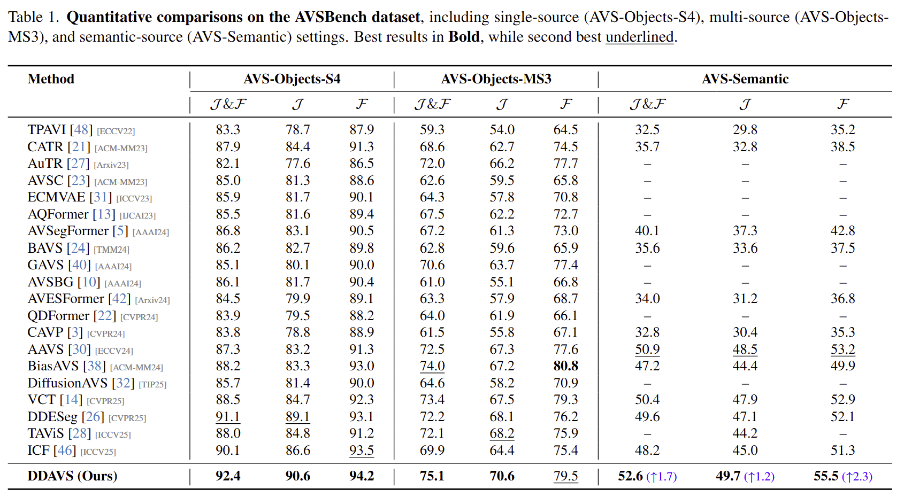
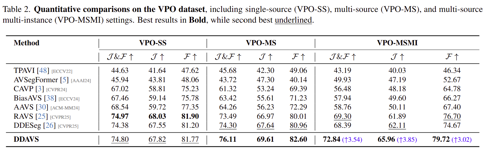
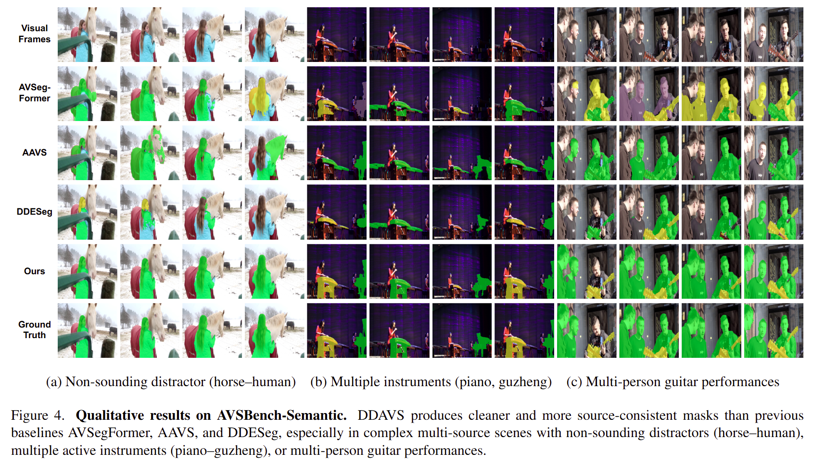
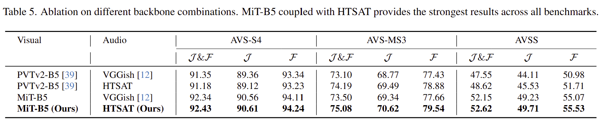
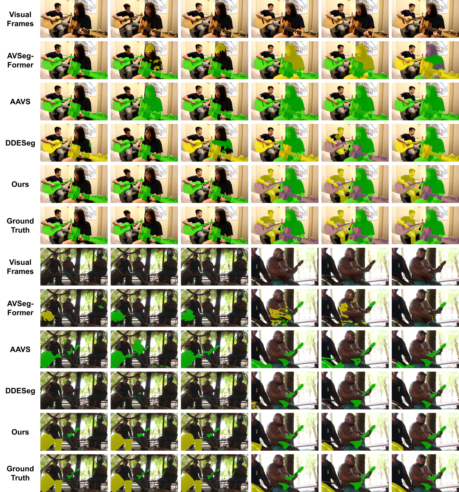

Pipeline

waveforms into disentangled semantic queries anchored to a prototype memory bank. (b) The Contrastive
Optimization Module (COM) enhances query robustness through contrastive learning, used only during
training. (c) The Audio-Visual Alignment Module (AVAM) fuses audio queries with visual features via stacked
alignment blocks, and a lightweight decoder outputs the sound-conditioned segmentation masks.
Results



Ablation Studies


Case Study

Case study of DDAVS on Multi-class tasks.